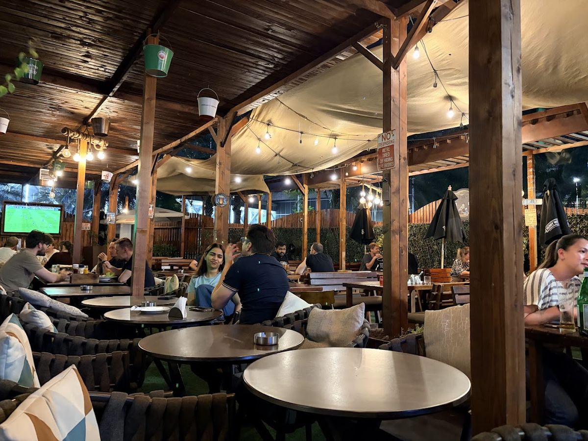
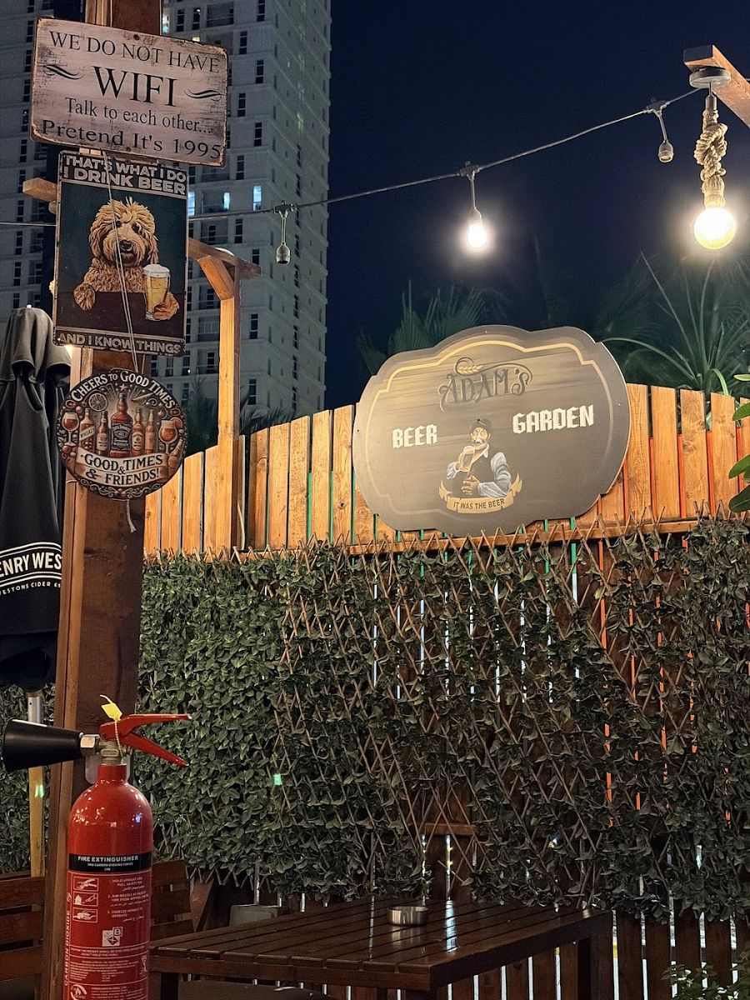
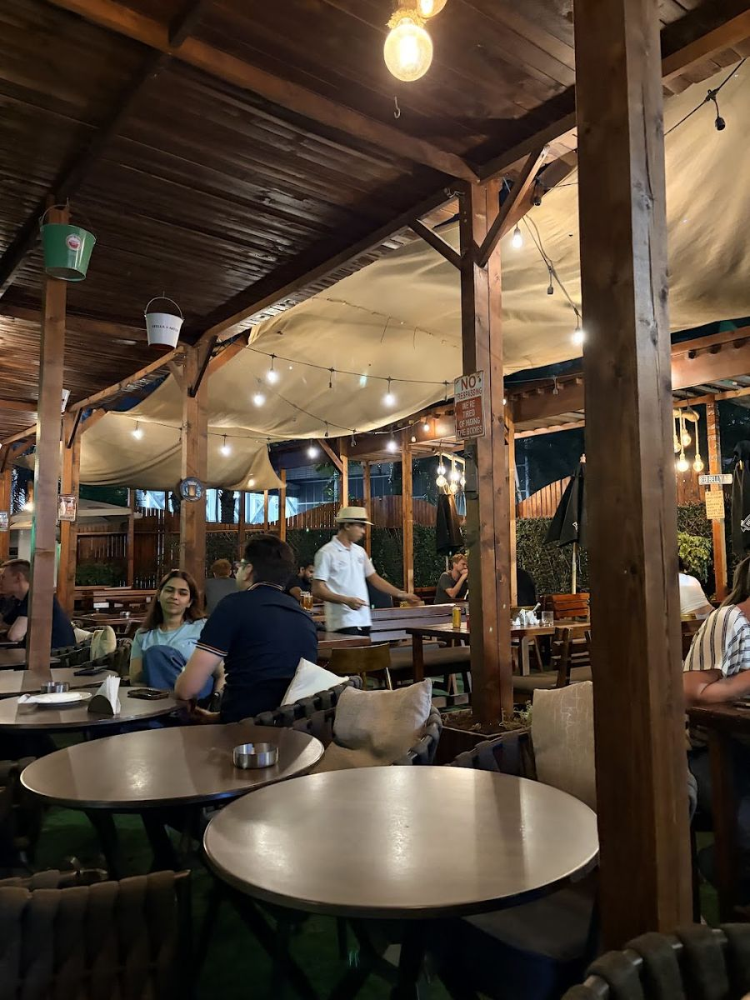

The beer garden
Covered, string-lit and cooled for summer, with the football on and a DJ on Thursdays. It's behind the fence on the ground floor of The Arc, Tower C.

Strung with lights
Timber beams overhead, bulbs strung from every one of them, and round tables underneath.
Covered and cooled
A roof for the midday sun and coolers for the warm evenings, so the garden works all year.
A screen of its own
The football is on outside too, so you don't have to choose between fresh air and the match.
Green all round
Hedges, planters and artificial grass between you and the road.
A week in the garden
The garden is open whenever we are. These are the nights it really earns its lights.
- Every day, till 7PM
Happy hour, inside and out. Happy hour details
- Thursday from 8PM
Garden Thursdays: a DJ under the string lights. See the night
- Saturday from 3:30PM
Match day, with the Premier League on the garden screen. See the night
- 4 – 6 December
The Abu Dhabi Grand Prix weekend on every screen. Race weekend



Book a garden table
Tell us it's for the garden and the team will hold you a table outside. Busy nights fill up, so book ahead.